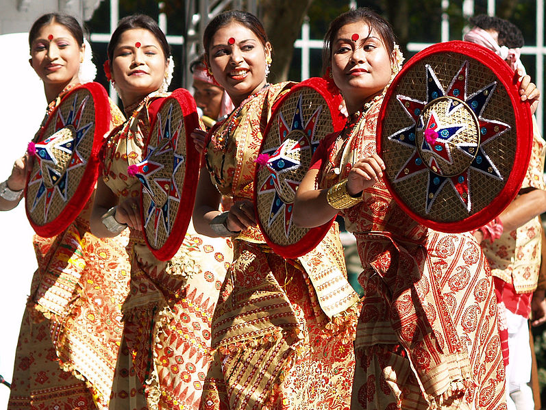
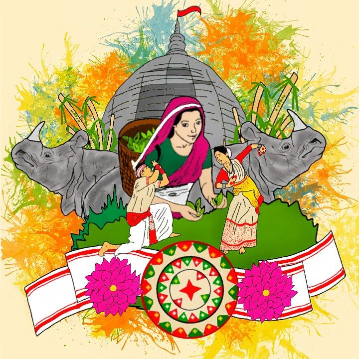
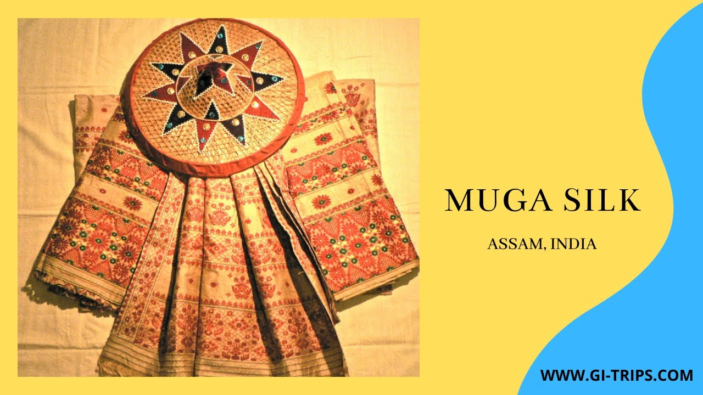
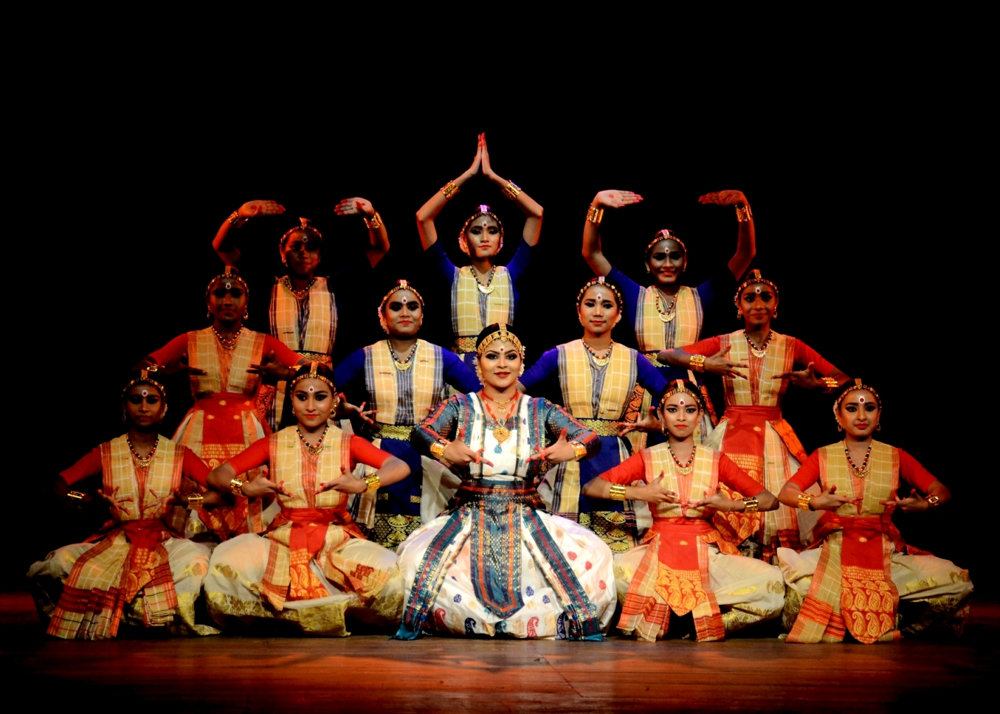

Land of Festivals, Folklore & Timeless Traditions

Bihu is the heart of Assamese culture and is celebrated three times a year marking agricultural seasons. The festival includes energetic Bihu dance performances, traditional music with dhol and pepa, and colorful attire symbolizing joy and prosperity.
It represents unity, seasonal change, and the joyful spirit of the Assamese people, bringing communities together through music, rhythm, and celebration.

Assam has a rich tradition of oral storytelling filled with myths, heroic tales, magical legends, and river spirits deeply connected to nature.
Stories passed through generations reflect bravery, spirituality, and the cultural identity shaped by forests, rivers, and village life.

Weaving is an essential part of Assamese household culture, especially among women. Muga silk, known for its natural golden shine, is unique to Assam.
Traditional mekhela chador attire showcases intricate designs inspired by flowers, birds, and folklore, symbolizing pride and cultural heritage.

Sattriya is a classical dance form that originated in Assam’s monasteries called Sattras. It was introduced by Srimanta Sankardev as part of a devotional movement.
The dance blends storytelling, devotion, music, and expressive gestures, preserving Assam’s spiritual and artistic legacy.